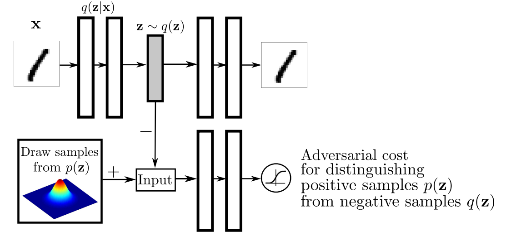

简介
对抗自编码器（Adversarial Autoencoders，AAE）出自2015年的《Adversarial Autoencoders》，其核心想法是将VAE与GAN结合，来得到一个更好的生成模型。论文首次提出了聚合后验分布（aggregated posterior），并使用它来优化VAE。事实上这篇论文是在CV上生成的，这里只是简单分析下其提出的聚合后验分布及与VAE的比较。
对抗自编码器
符号定义：
- \(p(z)\)：隐变量\(z\)的先验分布
- \(q(z|x)\)：编码器分布
- \(p(x|z)\)：解码器分布
- \(p_d(x)\)：数据\(x\)分布
- \(p(x)\)：模型的分布
定义聚合分布\(q(z)\)为\(q(z)=\int_xq(z|x)p_d(x)dx\)，AAE添加了\(q(z)\)与\(p(z)\)进行匹配的正则化项，模型结构如下：

可以看到与VAE最大的区别是，VAE是从后验分布\(q(z|x)\)中采样、使用KL散度逼近后验分布与先验分布，AAE是使用对抗网络来逼近\(q(z)\)与\(p(z)\)。在此基础上，引入了一个对抗网络判断隐藏状态来自随机先验分布\(p(z)\)的采样，还是来自\(q(z)\)。在编码器\(q(z|x)\)的选择上，论文提供了三种候选：
- 确定性函数，\(z\)仅与\(x\)相关。
- 高斯分布，与分布参数和随机性相关。
- 通用近似后验，\(z\)与\(x\)和随机噪声\(\eta\)相关。通用近似是一种近似分布的方法，确定性函数\(f(x,\eta)\)，\(\eta\)是一个随机噪声，因而其可以看作分布的通用近似。
论文中最终使用了确定性函数，个人猜测是更好收敛一些。